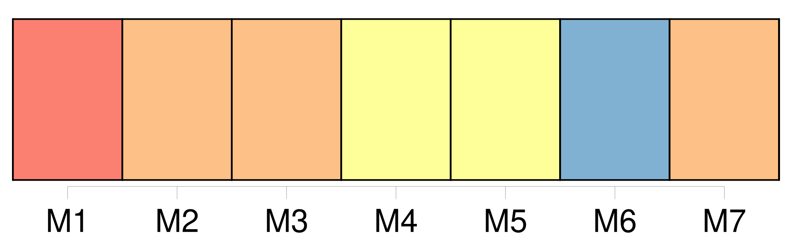
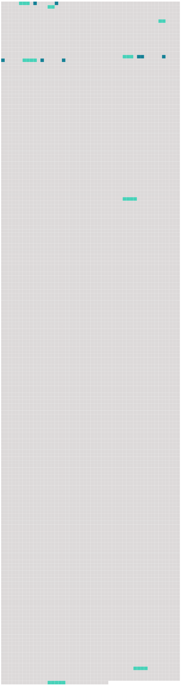

Longueur nb maillons : 16 mentions |
 |
Il était au bord d' [une large rue] , [qu'] il ne reconnaissait pas. [Elle] s'enfonçait en pleine nuit, très-loin. [2 phrases] Au milieu de la chaussée, de grands profils grisâtres de tombereaux barraient [la rue] ; et, d'un bout à l'autre, un souffle qui passait faisait deviner une file de bêtes attelées qu'on ne voyait point. [4 phrases] Mais ce qui le surprenait, c'était, aux deux bords de [la rue] , de gigantesques pavillons, dont les toits superposés lui semblaient grandir, s'étendre, se perdre, au fond d'un poudroiement de lueurs. [23 phrases]
Et [cette grande rue] , [celle] [qui] est devant nous, comment [la] nomme-t -on? — [C'] est une rue nouvelle, [la rue du Pont-Neuf] , [qui] part de la Seine et [qui] arrive jusqu'ici, à la rue Montmartre et à la rue Montorgueil …… [84 phrases] Tout le long de [la rue du Pont-Neuf] , on déchargeait, les tombereaux acculés aux ruisseaux, les chevaux immobiles et serrés, rangés comme dans une foire. [281 phrases]
Et, du fond de [la rue du Pont-Neuf] , des files de voitures arrivaient, éternellement. [6 phrases] Les maisons des angles, à fenêtres étroites, s'éveillaient, mettaient, dans l'air large de [la nouvelle rue du Pont-Neuf] , quelques jaunes et bonnes vieilles façades de l'ancien Paris. |
 |
Il est possible de télécharger la ressource sur la page Ortolang |
Si vous avez des questions ou vous voyez des erreurs, merci d'envoyer un mail à silvia.federzoni89@gmail.com |